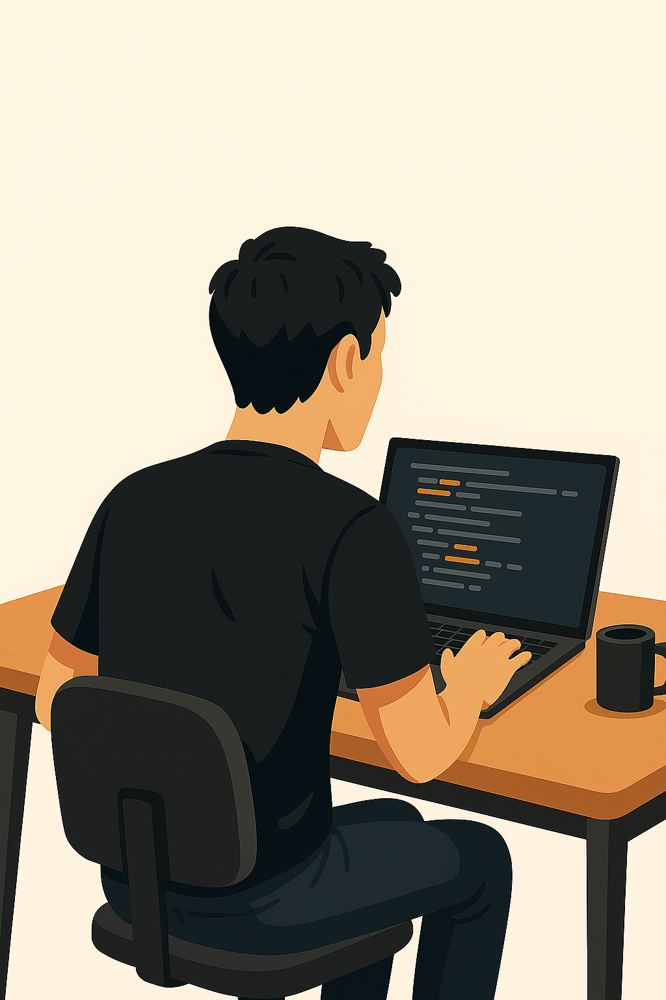
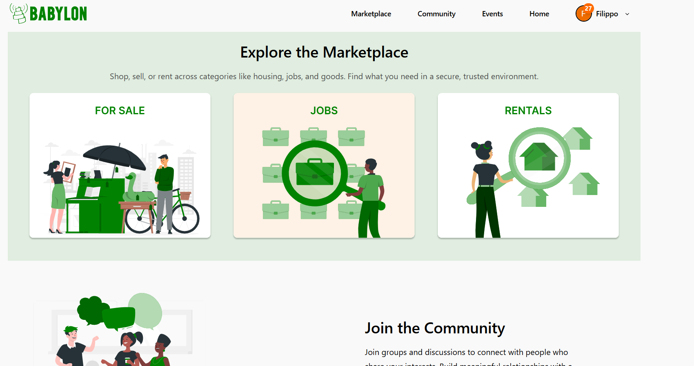
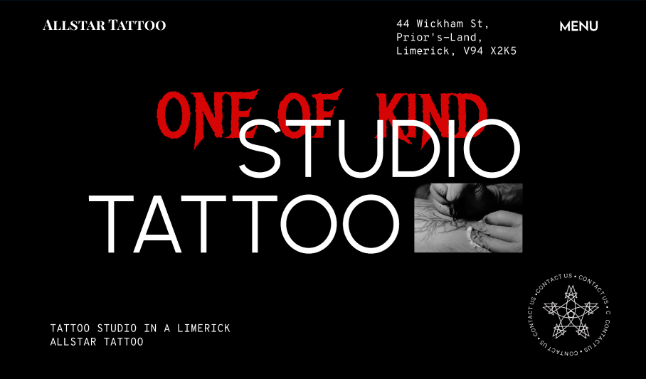
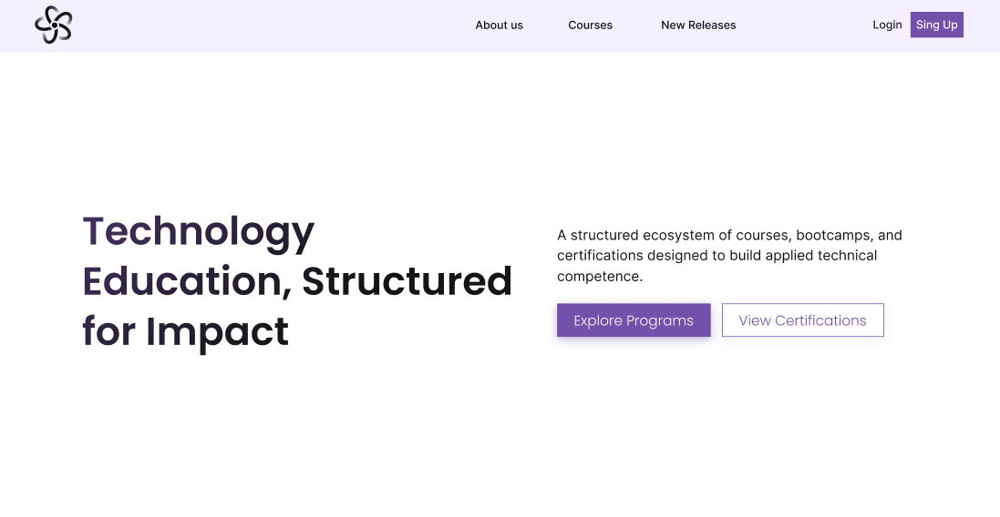

I’m a designer and developer passionate about UX/UI design and digital product experiences. I enjoy combining design thinking with frontend development to create intuitive, visually engaging, and user-centered interfaces.
View ResumeMobile UX concept for an event marketplace focused on the user journey of discovering and purchasing events. The interface explores how users search, browse, and select events through a clear and intuitive mobile layout. Designed in Figma with attention to usability, navigation flow, and simple interaction patterns optimized for mobile devices.

Website concept for a tattoo studio focused on strong visual identity and immersive layout. The project explores typography, image-driven sections, and subtle interface animations to create a more engaging browsing experience. Designed in Figma with reusable UI components.

Landing page task focused on layout, typography, and clear CTA structure. Designed in Figma with attention to spacing and responsive logic.

Responsive website for a local animal shelter. Developed with HTML, CSS, and JavaScript to practice clean layouts and interactive elements. This project helped me improve my adaptability and persistence when facing design or coding challenges.
A React-based weather app with Firebase integration. Built to deepen my skills in frontend development, API handling, and database interaction. Faced challenges with authentication and data sync — solved by researching and testing alternative solutions.